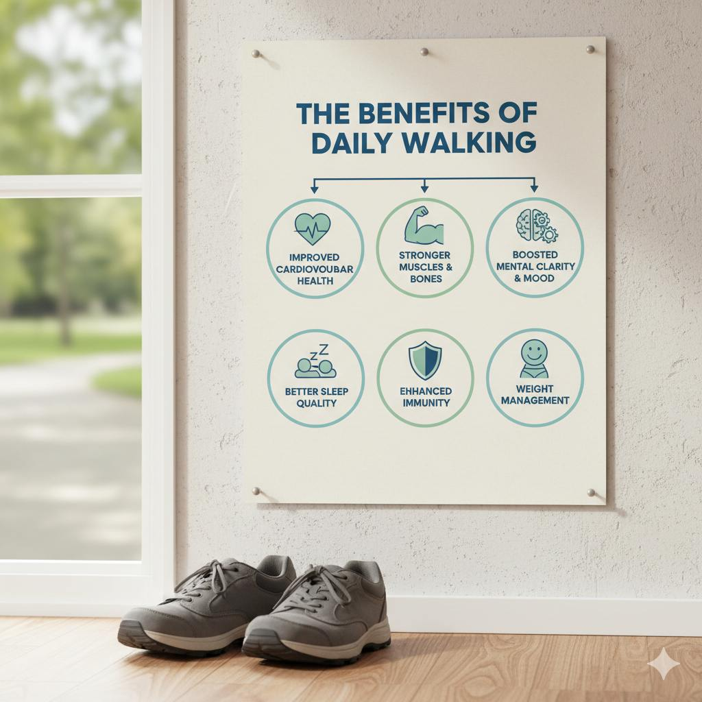

Have you ever wondered if that 10,000-step goal on your fitness tracker is based on solid science or just a marketing gimmick? As a physician specializing in preventive medicine, I've watched this number become a global phenomenon. But here's what truly fascinates me: while the origin might be less scientific than we'd like, the evidence supporting substantial health benefits from consistent daily walking is overwhelmingly positive.
The 10,000-step target actually originated in 1960s Japan as a marketing campaign for a pedometer called "manpo-kei," which literally translates to "10,000-step meter." Despite its commercial beginnings, decades of research have since validated that striving for this number delivers remarkable health improvements.
Cardiovascular Benefits: More Than Just a Healthy Heart
When we talk about cardiovascular health, walking does far more than just strengthen your heart muscle. A comprehensive 2022 review in the Journal of the American Heart Association analyzed data from over 50,000 adults and found that those consistently achieving 8,000-10,000 steps daily had a 40-50% lower risk of cardiovascular events compared to those taking fewer than 4,000 steps.
"The beauty of walking is its accessibility. You don't need special equipment or a gym membership to significantly reduce your risk of heart disease, stroke, and hypertension." - Dr. Rebecca Foster
But how does this work physiologically? Regular walking helps lower LDL (bad) cholesterol while raising HDL (good) cholesterol. It improves circulation, reduces arterial stiffness, and helps regulate blood pressure. The consistent rhythmic movement also trains your heart to work more efficiently, meaning it pumps more blood with fewer beats.
Weight Management: The Steady Approach That Works
Many of my patients are surprised to learn that walking can be as effective for weight management as more intense workouts, especially when maintained consistently. The key lies in sustainable calorie expenditure and metabolic regulation.
A 2023 study published in Obesity followed participants for 12 months and found that those who maintained a 10,000-step daily routine lost an average of 10 pounds more than the control group, without making drastic dietary changes. The researchers noted that walking appears to help regulate appetite hormones and improve insulin sensitivity, making it easier to maintain a healthy weight.
For the average person, 10,000 steps burns approximately 400-500 calories, depending on factors like weight, pace, and terrain. Over a week, this adds up to 3,500 calories - equivalent to one pound of fat. The cumulative effect over months and years is substantial.
Mental Wellbeing: The Step-Based Stress Reliever
Perhaps the most immediate benefit my patients report is improved mental health. Walking stimulates the release of endorphins, our body's natural mood elevators, while simultaneously reducing cortisol levels.
A landmark 2024 study in The Lancet Psychiatry followed 1.2 million participants and found that walking 10,000 steps daily was associated with a 35% lower risk of depression and a 40% reduction in reported stress levels. The rhythmic, bilateral movement of walking has even been shown to facilitate bilateral stimulation of the brain, similar to techniques used in EMDR therapy for trauma.
Longevity: Adding Years to Your Life
The connection between daily step count and lifespan is perhaps the most compelling argument for maintaining this habit. Research from the National Institutes of Health tracking 5,000 middle-aged adults found that those averaging 10,000 steps daily had a 46% lower mortality risk over the following decade compared to those taking 4,000 steps or fewer.
"The data is clear: regular walkers don't just add years to their life - they add life to their years. The combination of physical health benefits and mental clarity creates a powerful longevity cocktail." - Dr. Rebecca Foster
What's particularly interesting is that the benefits appear to plateau around 12,000 steps, with minimal additional longevity gains beyond that point. This suggests that 10,000 steps hits a sweet spot for most adults.
Practical Strategies for Sustainable Step Counts
Many people struggle to incorporate more walking into already busy schedules. Based on my clinical experience, here are the most effective strategies:
Start gradually: If you're currently at 3,000 steps daily, jumping to 10,000 overnight will likely lead to burnout or injury. Instead, increase your daily average by 1,000 steps each week.
Incorporate walking meetings: For every hour you spend sitting, take a 5-minute walking break. The cumulative effect is substantial.
Park strategically: Park at the far end of parking lots, get off public transportation one stop early, or take the stairs whenever possible.
Make it social: Schedule walking dates with friends or family instead of coffee or meal meetings.
Track progress: Use a pedometer, smartwatch, or smartphone app to monitor your steps. The feedback loop reinforces the habit.
Frequently Asked Questions
Excellent question, Michael. Research shows significant benefits begin at around 7,000-8,000 steps daily, with the most substantial gains between 8,000-10,000. For those who can't reach 10,000, aiming for 7,500 still provides about 80% of the cardiovascular benefits. The key is consistency rather than perfection.
Great point, Sarah. Both matter, but for different benefits. A 2024 study in JAMA Internal Medicine found that while step count primarily correlates with longevity benefits, pace (steps per minute) more strongly correlates with cardiovascular fitness. For optimal results, aim for a mix - most days at a comfortable pace, with 2-3 days including brisk intervals where you're slightly breathless.
This is a common challenge, David. Office workers average just 3,000-4,000 steps during work hours. Try these strategies: take a 15-minute walking break morning and afternoon (≈2,000 steps each), walk during phone calls (≈1,000 steps per 10 minutes), use a bathroom on another floor, and consider a under-desk walking pad for portions of your day. A 30-minute lunch walk adds another 3,000-4,000 steps.
Conclusion: Steps Toward a Healthier Future
The 10,000-step goal may have commercial origins, but its health benefits are scientifically validated. From cardiovascular protection and weight management to mental wellbeing and longevity, consistent daily walking delivers remarkable returns for relatively minimal investment.
As with any health intervention, consistency matters more than perfection. If 10,000 steps feels daunting, start where you are and build gradually. The most important step is the next one.